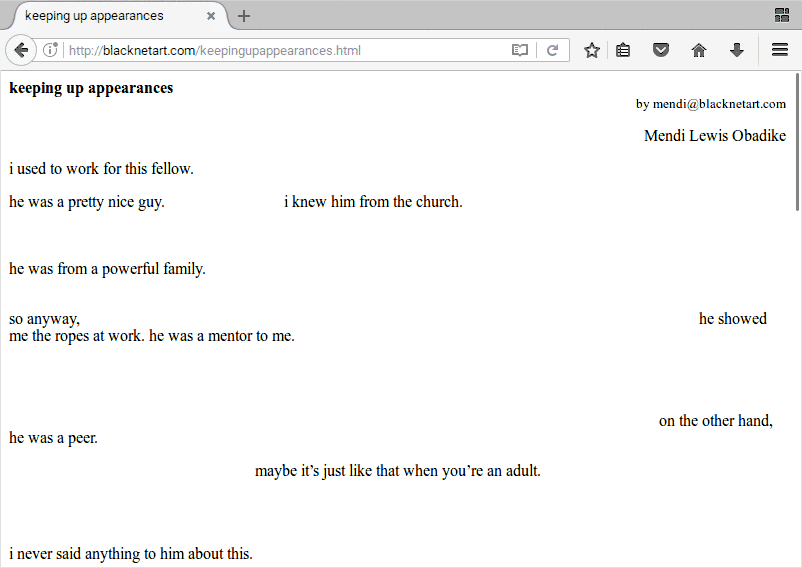
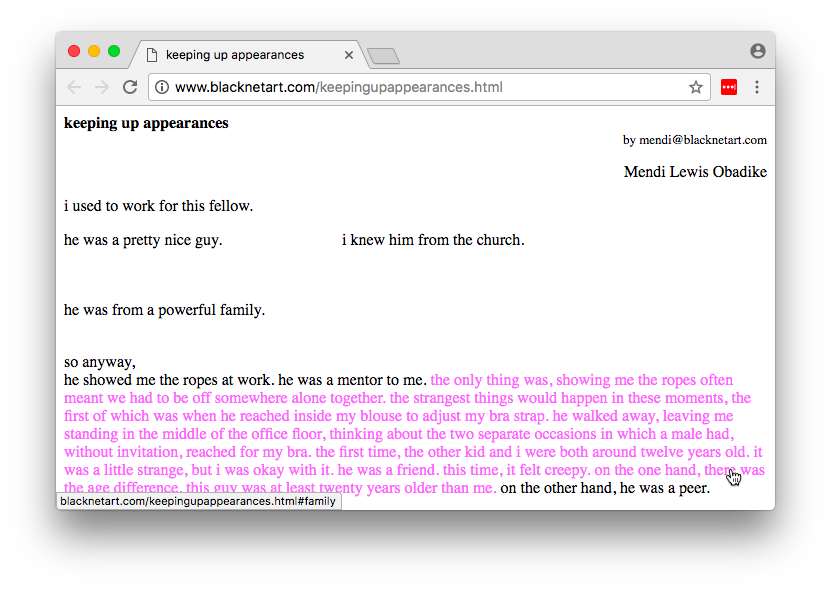
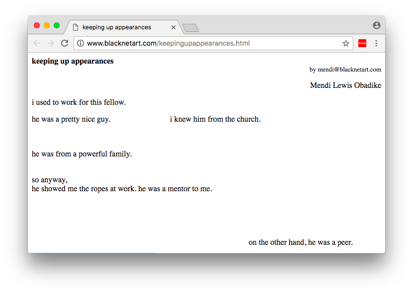

Keeping Up Appearances is a “hyper testimonial” in which Mendi Obadike recounts her interactions with a much older white male mentor as a young black woman. At first glance, the work appears to consist only of black, nonreactive Times New Roman text snippets, which make some sense on their own but fail to come together as a coherent narrative. Notably, Keeping Up Appearances is not interactive, unlike many other hypertext works. Purely a spectator, unable to intervene in Mendi’s narrative, the user is reminded of the historical inevitability of dynamics such as the one she describes.
View the artwork here.